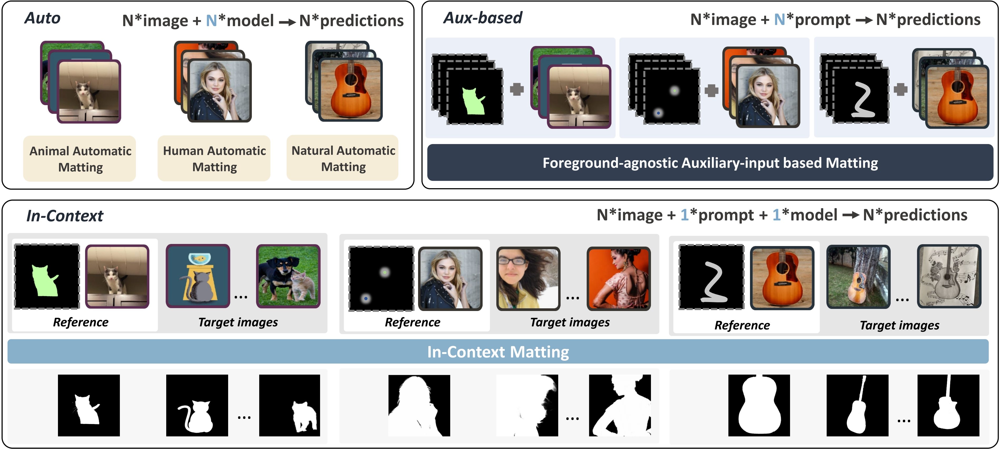
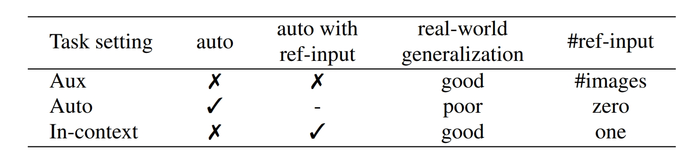
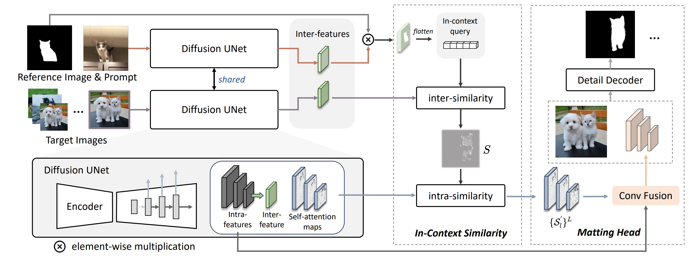
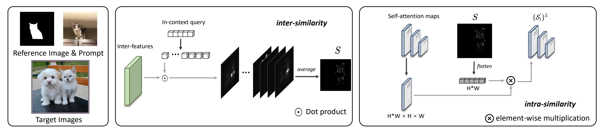
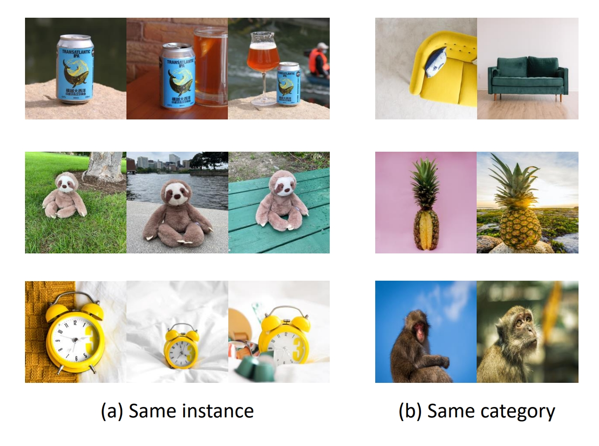
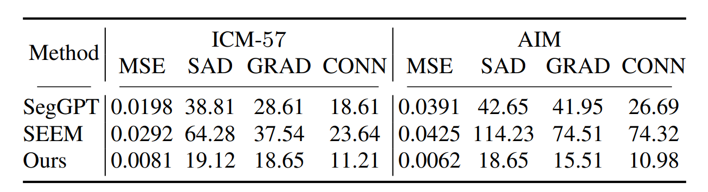
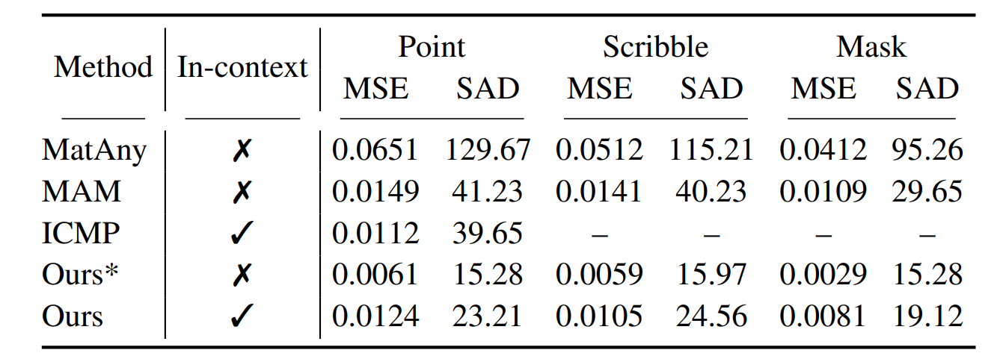
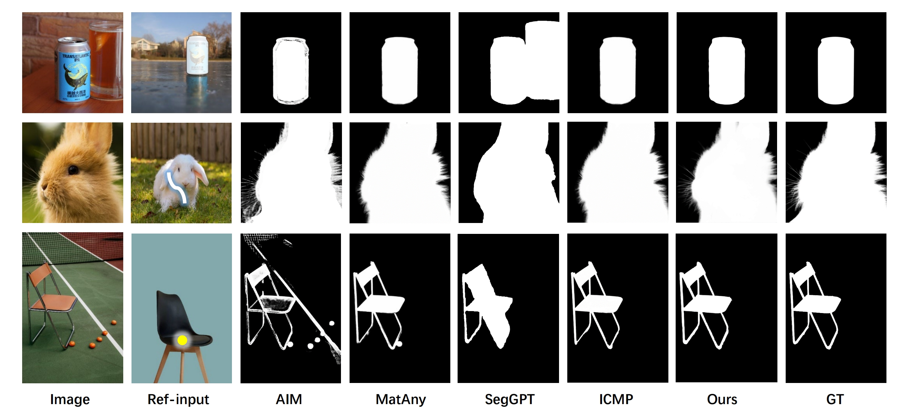
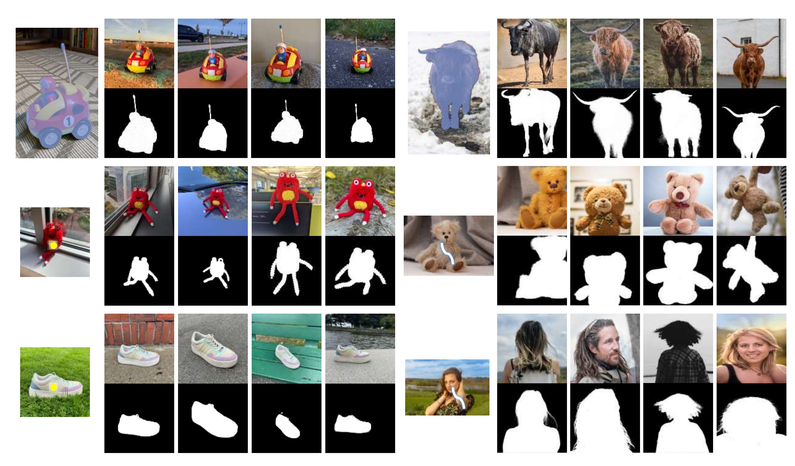
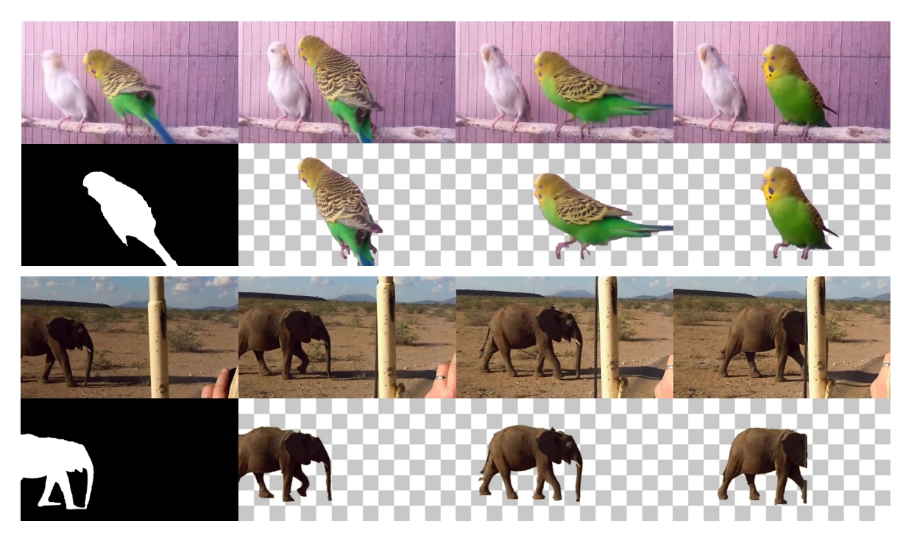

In-Context Matting
|
He Guo1
|
Zixuan Ye1
|
Zhiguo Cao1
|
Hao Lu1
|
|
|
1Huazhong University of Science and Technology
|

In-context matting enables automatic natural image matting of target images of a certain object category conditioned on a reference image of the same category, with user-provided priors such as masks and scribbles on the reference image only. Notice that, our approach exhibits remarkable cross-domain matting quality.
Abstract
We introduce in-context matting, a novel task setting of image matting. Given a reference image of a certain foreground and guided priors such as points, scribbles, and masks, in-context matting enables automatic alpha estimation on a batch of target images of the same foreground category, without additional auxiliary input.
This setting marries good performance in auxiliary input-based matting and ease of use in automatic matting, which finds a good trade-off between customization and automation.
To overcome the key challenge of accurate foreground matching, we introduce DiffusionMatte, an in-context matting model built upon a pre-trained text-to-image diffusion model. Conditioned on inter- and intra-similarity matching, DiffusionMatte can make full use of reference context to generate accurate target alpha mattes. To benchmark the task, we also introduce a novel testing dataset ICM-57, covering 57 groups of real-world images.
Quantitative and qualitative results on the ICM-57 testing set show that DiffusionMatte rivals the accuracy of trimap-based matting while retaining the automation level akin to automatic matting.
Comparison between in-context matting and the existing image matting paradigms

"Aux" and "Auto" are abbreviations for automatic matting and auxiliary input-based matting, respectively. In-context matting uniquely requires only a single reference input to achieve the automation of automatic matting and the generalizability of auxiliary input-based matting.
How to do it (pipeline)

DiffusionMatte integrates a Stable Diffusion-derived feature extractor, an in-context similarity module, and a matting head. It processes a target image, a reference image, and an RoI map. Features of both reference and target images, and self-attention maps of the target image, are extracted and used. The in-context similarity utilizes the in-context query from the reference image to create a guidance map, which, combined with self-attention maps, assists in locating the target object. The matting head then generates the alpha matte for the target object.
In-Context Similarity

Illustration of the inter- and intra-similarity modules. For simplicity, the resize operation is omitted, only the calculation of one element of the in-context query is depicted, and the fusion process of self-attention maps from a single scale is shown. The inter-similarity computes the similarity between features extracted from the target image and the in-context query derived from the reference image, generating an average similarity map. The intra-similarity combines the self-attention maps representing intra-image similarities within the target image with the similarity map obtained from the inter-similarity module.
Test dataset: ICM-57

To assess the performance of our model, we constructed the first testing dataset for in-context matting, named ICM-57, which comprises 57 image groups that form various real-world contexts. Our test set ICM-$57$ encompasses foregrounds of the same category and same instance, fulfilling the essence of in-context matting.
Experiment-1: Comparison with in-context segmentation models
Comparison with in-context segmentation models

Experiment-2: Comparison with automatic and auxiliary input-based matting models
Experiment-3: Comparison with interactive matting models

In the
penultimate row, our method is provided with guidance information for every image, reducing to an auxiliary input-based method.
Our method outperforms automatic methods and some of the auxiliary input-based methods, and its performance is comparable to
that of the trimap-based method, VitMatte.

Qualitative results of different image matting methods.

Qualitative results of DiffusionMatte. The first column shows the reference input, while the remaining columns display target
images and their predicted alpha mattes. Given a single reference input, our method can automatically process the same instance or category
of foreground.

The technique of in-context matting is easily extendable to
video object matting. The key is to use a frame of the video
as a reference.
Acknowledgements
Based on a template by
Ziyi Li and Richard Zhang.